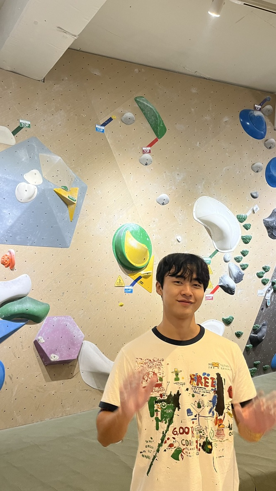

Causality Lab, Seoul National University
Jul 2025 — Present
Undergraduate Researcher · Advisor: Prof. Sanghack Lee
- Develop Causal Foundation Models.
Hi! I am Junha Ham, an undergraduate at Seoul National University, studying Computer Science and Engineering and Economics. I am an undergraduate researcher at the Causality Lab, advised by Prof. Sanghack Lee.
My research focuses on causal machine learning, particularly causal foundation models and probabilistic inference. I am also interested in world models and robot learning and perception.
Previously, I worked with Prof. Jungmin Lee on labor and education data.

Under review, 2026
Prior-data fitted networks (PFNs) are transformers pre-trained to approximate posterior predictive distributions under a task prior. Their causal extensions estimate treatment effects from observational data without task-specific retraining. However, existing approaches typically restrict inference to predefined causal quantities, such as treatment effects or outcomes under treatment and control. In particular, they do not capture posterior dependence between the control and treatment conditional expected potential outcomes, limiting users’ ability to ask causal queries involving expected outcomes, treatment effects, and their relationships. Moreover, interval coverage alone does not establish posterior accuracy. To address these gaps, we introduce JointCFM, which integrates the flexibility of Bayesian joint posterior inference into PFNs, jointly capturing the epistemic uncertainty and posterior dependence of the control and treatment conditional expected potential outcomes pair. This enables users to answer various causal queries chosen at inference time from a single posterior without additional model fitting. Using simulation-based calibration, we test necessary calibration conditions for the marginals and posterior dependence, including within prespecified input groups. Under the task prior, experiments support calibration of tested quantities and demonstrate benefits of preserving posterior dependence. On semi-synthetic benchmarks, JointCFM is competitive in probabilistic prediction of conditional average treatment effects.
@unpublished{ham2026jointcfm,
title = {Amortized Joint Posterior Inference for Various Causal Queries via Prior-Data Fitted Networks},
author = {Ham, Junha and Kim, Deokgyu and Kim, Doeun and Kim, Serjin and Lee, Sanghack},
year = {2026},
note = {Under review}
}Under review, 2026
Off-policy evaluation (OPE) estimates a target policy’s value from data collected by another policy. Weighting a pool of estimators can improve reliability, but allowing negative weights can amplify errors and produce an estimate worse than every member of the pool. We propose OPERA-S, which filters the estimator pool and learns simplex weights by minimizing the squared deviations of combined bootstrap estimates from a robust estimate of the policy value. The resulting optimization is a convex quadratic program. The simplex constraint guarantees that, on every dataset, the ensemble’s squared error is no greater than the largest squared error among its base estimators. For bounded estimator outputs, we bound the ensemble’s expected squared error under bootstrap resampling relative to the best convex combination of the filtered estimators. Experiments on contextual bandits, tabular reinforcement learning (RL), and D4RL continuous-control tasks demonstrate the effectiveness of OPERA-S in improving the accuracy and reliability of OPE.
@unpublished{ham2026operas,
title = {OPERA-S: Preventing Error Amplification in Ensemble Off-Policy Evaluation},
author = {Kim, Hyunwoo and Han, Gyeongchan and Kim, Bogeun and Kim, Serjin and Cho, Sangyeon and Ham, Junha and Shin, Jaehyeok and Lee, Sanghack},
year = {2026},
note = {Under review}
}ICML 2026 Workshop on Foundation Models for Structured Data (FMSD)
Causal Foundation Models (CFMs) amortize Bayesian causal inference by pretraining on synthetic datasets, enabling zero-shot Conditional Average Treatment Effect (CATE) estimation. We study the structural bias induced when an inference-time query includes post-treatment covariates. We decompose the resulting CATE bias into three classical components — a natural indirect effect, an interaction term, and a treatment-differenced selection bias — and verify that the empirical CATE error of two representative CFMs, Do-PFN and CausalPFN, is consistent with the corresponding theoretical bounds under mediator and collider conditioning. Empirically, removing post-treatment covariates from the query yields substantial reductions in estimation error across post-treatment topologies, without retraining. As a practical alternative when the structural graph is unavailable, we introduce Treatment-Centric Local Discovery (TC-LD), a lightweight pre-inference filter that recovers most of this improvement on both fully-synthetic and semi-synthetic benchmarks.
@inproceedings{ham2026cfmposttreatment,
title = {Causal Foundation Models Perform Better without Post-treatment Variables},
author = {Ham, Junha and Kim, Deokgyu and Kim, Doeun and Kim, Serjin and Lee, Sanghack},
year = {2026},
booktitle = {ICML 2026 Workshop on Foundation Models for Structured Data (FMSD)},
url = {https://openreview.net/forum?id=ULoLF1aOo1}
}ICML 2026 Workshop on Structured Probabilistic Inference and Generative Modeling (SPIGM)
Causal Foundation Models (CFMs) pretrain amortized causal estimators on large collections of synthetic datasets sampled from structural causal model (SCM) priors. At optimal capacity, they recover the corresponding interventional posterior predictive target for queries on the training query surface. We study the failure mode induced when an inference-time query includes a post-treatment covariate. Structurally, we decompose the resulting CATE bias into three components: loss of the natural indirect effect, an interaction penalty, and treatment-differenced selection bias. Distributionally, for models whose training query surface includes post-treatment-conditioned queries, we prove that conditioning on post-treatment values yields strictly positive KL divergence from the marginal interventional law on a positive-measure subset, and we provide closed-form KL decompositions under linear-Gaussian SCMs. Empirically, removing post-treatment covariates from the query yields substantial reductions in PEHE across graph topologies and CFM models without retraining. We further introduce Treatment-Centric Local Discovery (TC-LD), a lightweight pre-inference filter that flags likely post-treatment variables and recovers most of this improvement on our synthetic benchmark.
@inproceedings{ham2026cfmquery,
title = {A Structural View of Query Misspecification in Causal Foundation Models},
author = {Ham, Junha and Kim, Deokgyu and Kim, Doeun and Kim, Serjin and Lee, Sanghack},
year = {2026},
booktitle = {ICML 2026 Workshop on Structured Probabilistic Inference and Generative Modeling (SPIGM)},
url = {https://openreview.net/forum?id=HZ2mgJ8OJs}
}Jul 2025 — Present
Undergraduate Researcher · Advisor: Prof. Sanghack Lee
Sep 2025 — Jul 2026
Undergraduate Researcher
Mar 2025 — Jun 2025
Undergraduate Researcher · Advisor: Prof. Jungmin Lee
Mar 2021 – Present
B.S. in Computer Science and Engineering (in progress)
B.A. in Economics (in progress)
Jul 2022 – Aug 2022
Operation Intern
Sep 2024 – Jul 2025
Led monthly economic seminars and weekly macroeconomic briefings, and authored articles for the club's magazine.
Sep 2024 – Dec 2024
Helped international students with cultural adaptation and university life.
Korean (native), English (fluent), Chinese (intermediate)